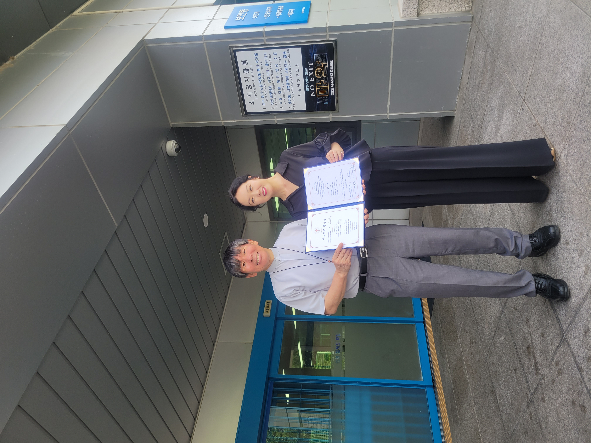
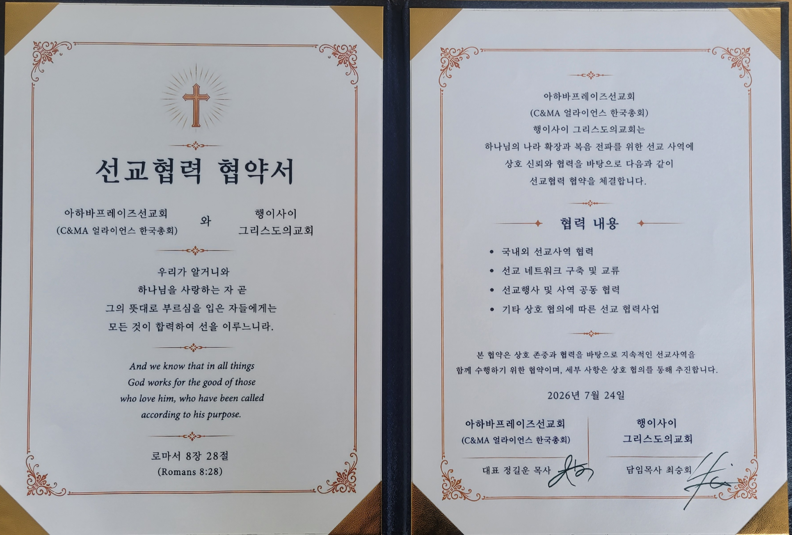
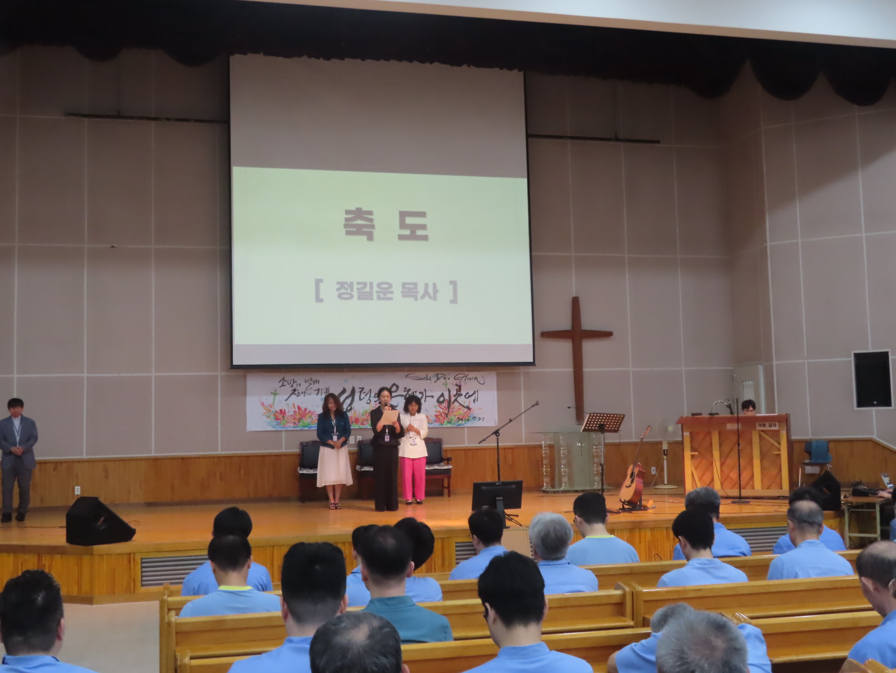

행이사이 그리스도의교회와 아하바프레이즈선교회는 상호 신뢰와 협력을 바탕으로 선교사역을 함께 이어가고 있습니다.
선교협력 협약과 예배·기도 현장을 통해 복음과 섬김의 연결을 넓혀갑니다.
Photos & Records
협력 현장
제공해 주신 순서대로 선교협력의 기록을 담았습니다.



행이사이 그리스도의교회와 아하바프레이즈선교회는 상호 신뢰와 협력을 바탕으로 선교사역을 함께 이어가고 있습니다.
선교협력 협약과 예배·기도 현장을 통해 복음과 섬김의 연결을 넓혀갑니다.
Photos & Records
제공해 주신 순서대로 선교협력의 기록을 담았습니다.

